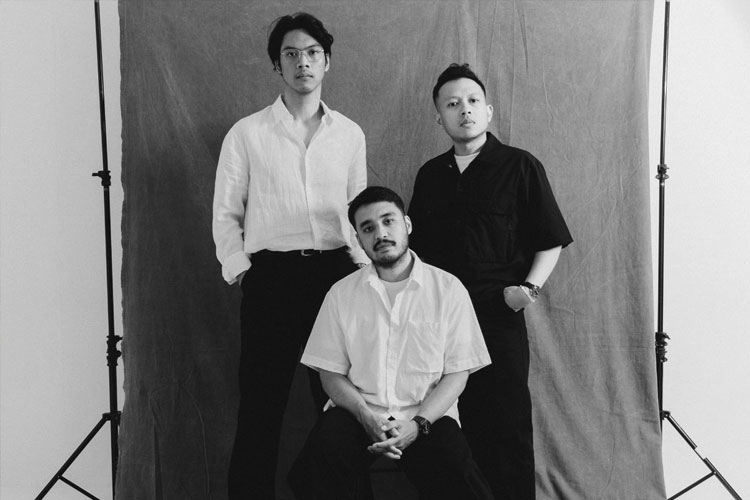

33x
lirik lagu perunggu
original video

Risalah terikatnya
Batin dan raga yang mengunci
Di atas Sang Maha Daya
Semua kendali terambil alih
Jikalau kau keluhkan
Dengung sumbang yang mengganggu
Buka lagi visimu
Kau tahu mana urutan satu
Di antara pusaran nirfungsi
Petakan semua lagi
Titik tuju yang telah terpatri
Melamban bukanlah hal yang tabu
Kadang itu yang kau butuh
Bersandar, hibahkan bebanmu
Rotasikan pandanganmu
Ambil sudut yang terbaru
Belum pernah kau coba
Lihat semua bukan dari matamu
Kelak kau 'kan mengingat
Yang membawamu ke sini
Kami pernah di situ, di posisimu
Helakan kesahmu
Di antara pusaran nirfungsi
Petakan semua lagi
Titik tuju yang telah terpatri
Melamban bukanlah hal yang tabu
Kadang itu yang kau butuh
Bersandar, hibahkan bebanmu
Tak perlu kau berhenti kurasi
Ini hanya sementara
Bukan ujung dari rencana
Jalanmu 'kan sepanjang niatmu
Simpan tegar dalam hati
29 kau terus mencari
Sebutlah nama-Nya
Tetap di jalan-Nya
Kelak kau mengingat
Kau akan teringat
Sebutlah nama-Nya
Tetap di jalan-Nya
Kelak kau mengingat
Kau akan teringat
Sebutlah nama-Nya
Tetap di jalan-Nya
Kelak kau mengingat
Kau akan teringat
Sebutkanlah nama-Nya
Resapilah jalan-Nya
Kelak kau mengingat
Kau akan teringat
Terus berenang
Lanjutlah mendaki
Terus berenang
Lanjutlah mendaki
Terus berenang
Lanjutlah mendaki
Terus berenang
Lanjutlah mendaki
Songwriters: Dennis Ferdinand Sangi, Maulana Malik Ibrahim, Beta Giovanni Rahmadeva, Ildo Hasman, Muhammad Adam Faisal Adenan. For non-commercial use only.